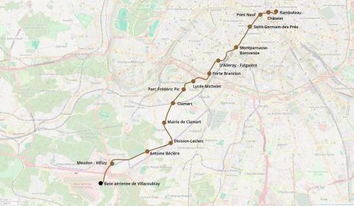

M11 Sud-Ouest - Vélizy
M11 Sud-Ouest - Vélizy
Châtelet - Rambuteau - Vélizy - Base aérienne
Une extension de la ligne 11 du métro.
La ligne 11 qui se termine au milieu de Paris à Châtelet-les-Halles n'est pas exploitée au maximum de son potentiel.
Le prolongement à Vélizy servirait à créer une nouvelle connexion rapide entre Châtelet et Montparnasse - Bienvenue, améliorer la desserte du 14e arrondissement de Paris et offrir un nouveau moyen rapide pour se rendre à Paris depuis les villes de Vanves, Clamart, Meudon et Vélizy. La desserte du parc des expositions de la porte de Versailles par le sud pourrait également intéresser les usagers se rendant à un salon.
Le métro 11 serait detourné à partir de Rambuteaux pour partir vers l'ouest, desservir le pôle Châtelet depuis une station située sous la rue Berger, moins excentrée par rapport à l'actuelle station situé près de la Seine. Après cela le nouveau tracé partirait en direction du sud vers Montparnasse-Bienvenüe via Saint-Germain-des-Prés. On continurait ensuite vers la Porte Brancion, pour traverser les villes de Vanves et de Clamart avec une station de métro pour les mairies de chaque commune traversée.
Après avoir desservi l'hôpital Antoine Beclère le tracé partirait vers l'ouest et rejoindrait la gare de Meudon - Vélizy puis la base aérienne de Villacoublay son terminus.
Un service (ligne 11 bis) comparable à l'ancienne voie navette relierait Rambuteaux à Châtelet Pont Marie (Le terminus actuel de la ligne) par le tunnel abandonné pour le prolongement de la ligne principale.
Voir les autres projets associés à cette ligne
Carte
{kind=link}

Cliquer pour agrandir
Stations
Si ce projet vous intéresse n'hésitez pas à le (re-)partagez sur les réseaux sociaux ou par courriel ou à en parler autour de vous.
Si vous souhaitez travailler à la concrétisation de ce projet, passez à l'action et contactez nous.
Commenter